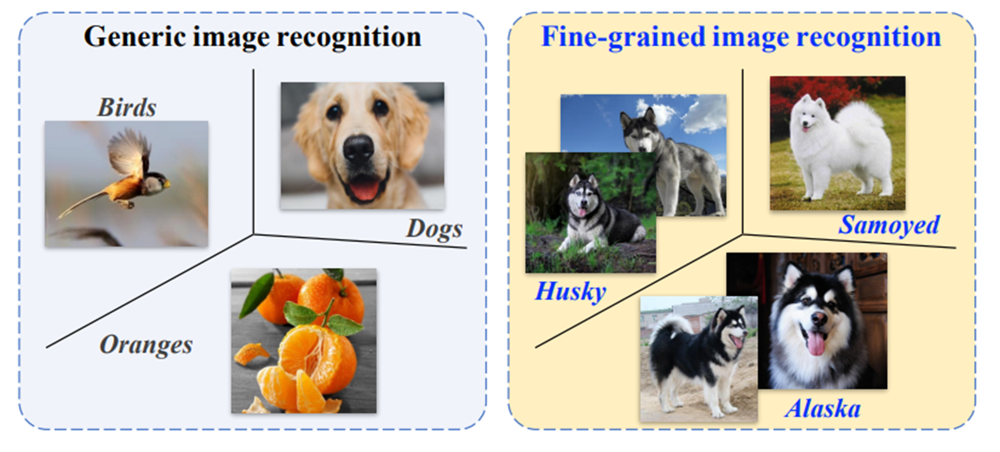

Awesome Fine-Grained
Image Classification
A collection of fine-grained image recognition papers
By Edwin 'arkel23' Arkel Rios.
What is Fine-Grained Image Classification (FGIC)?
Classification between sub-categories within larger super-category (e.g., bird species, car models or anime characters)
Challenges in FGIC
- Small inter-class variations (subtle differences between classes)
- Large intra-class differences (pose, environment, etc.)
- Mostly small datasets so easy to overfit
FGIC Methods
- Equip coarse image recognition backbones with modules to select discriminative regions
- Loss functions to differentiate between classes and prevent overfitting
Papers Summary
Slide down for summaries or to the right (or click on years) to go through the slides of all papers